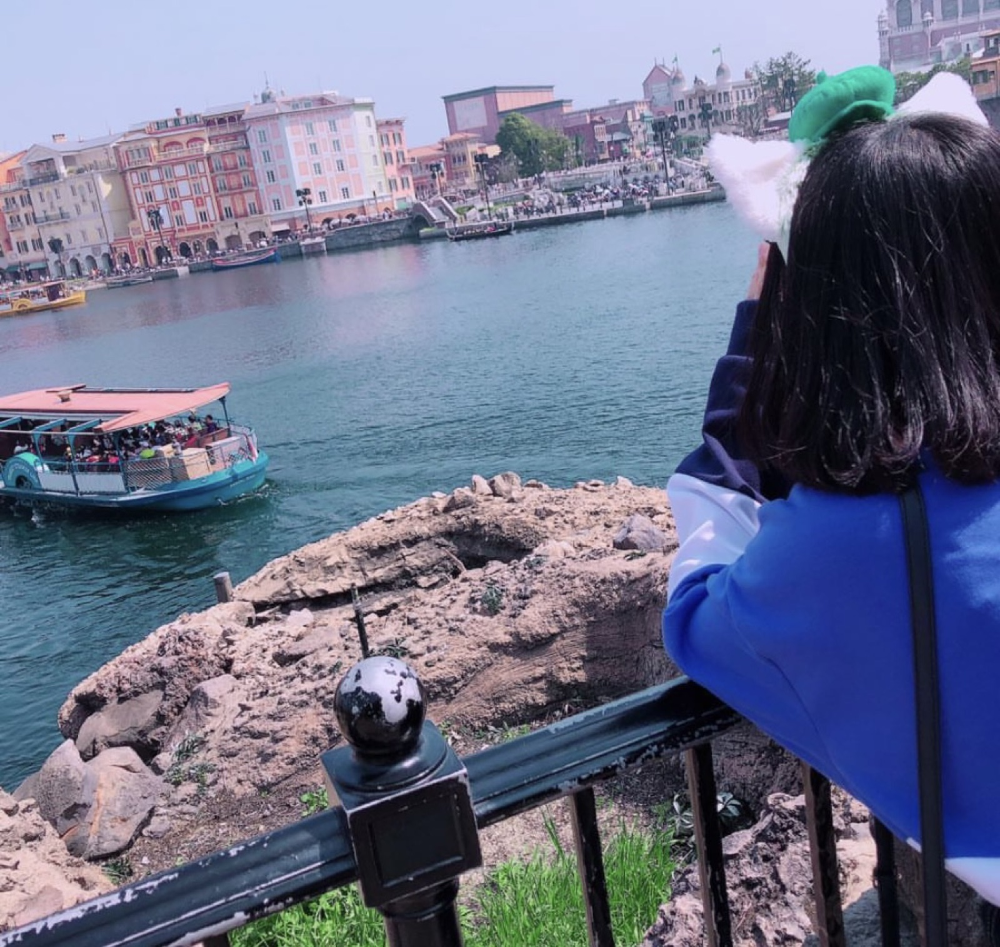
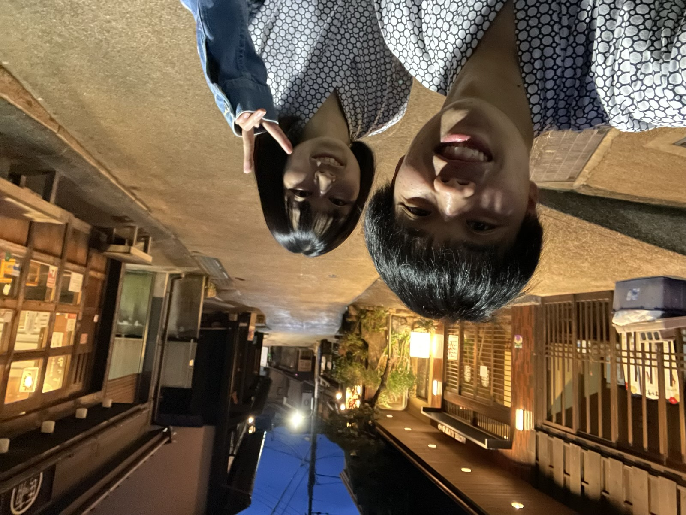
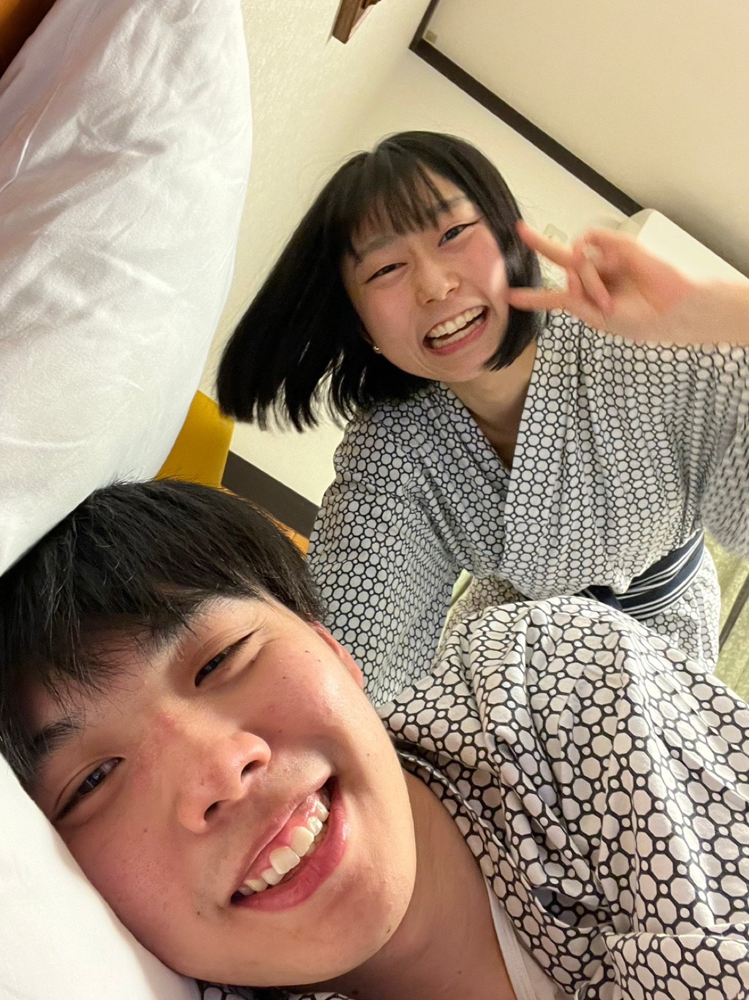
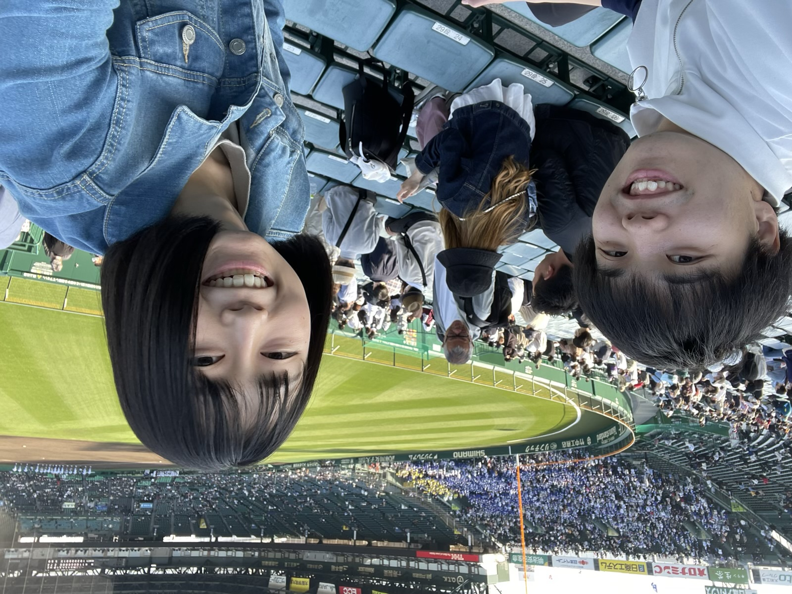
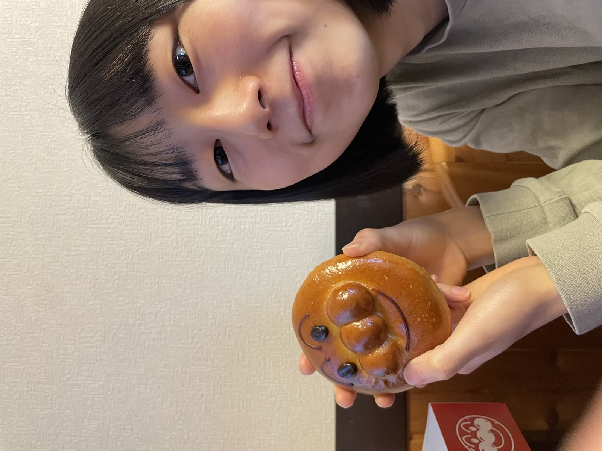
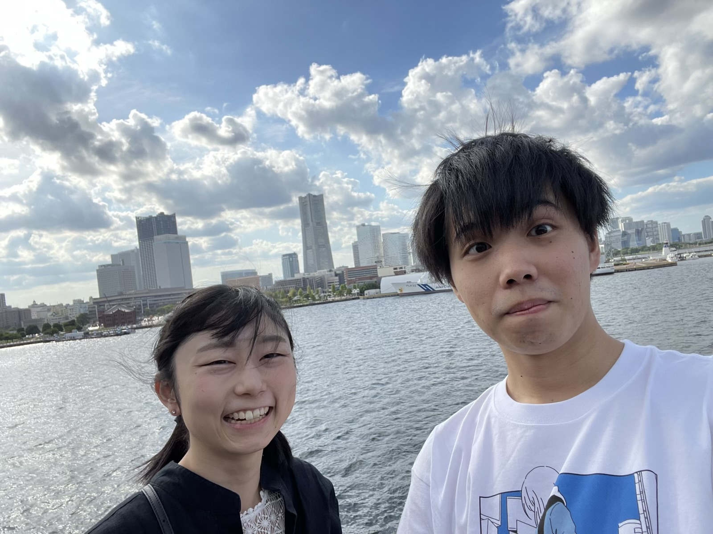
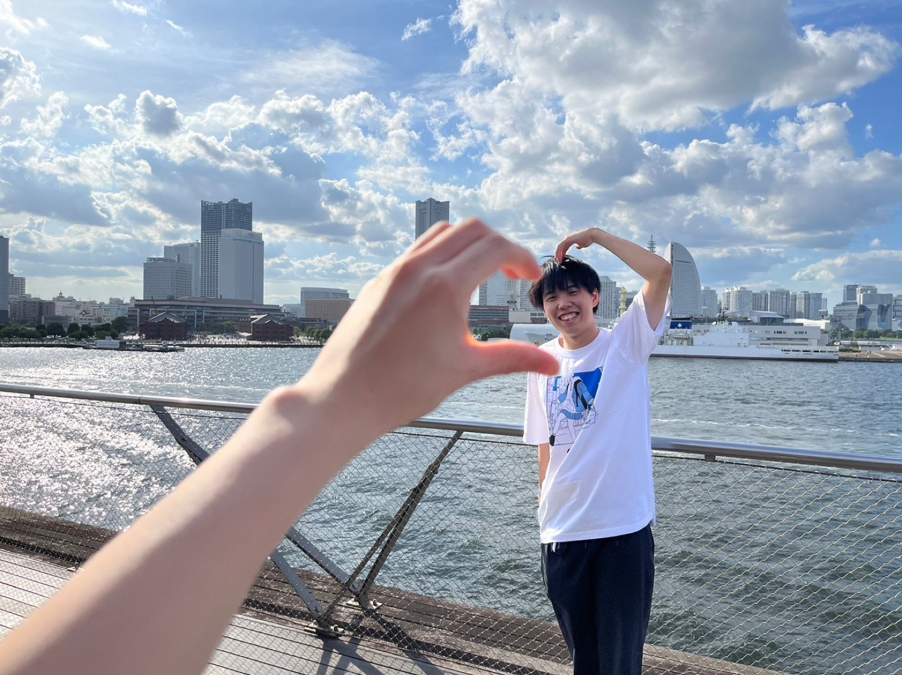
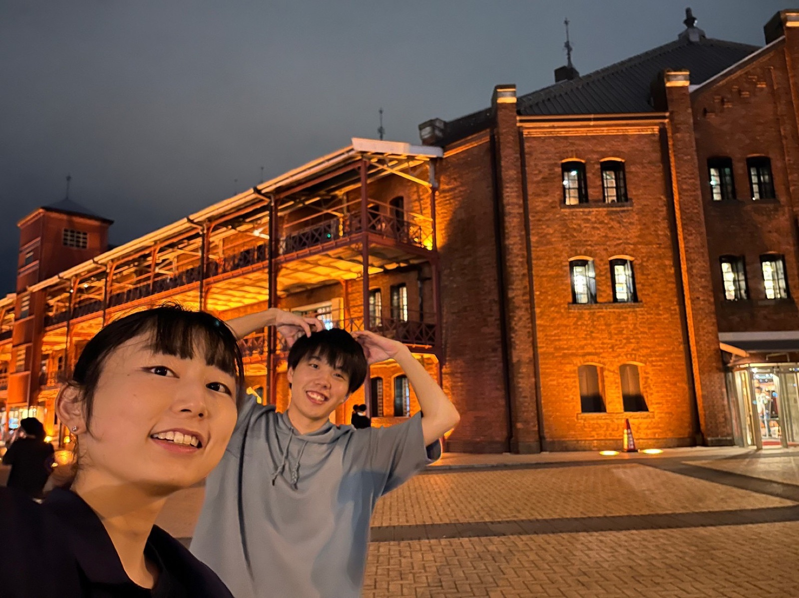
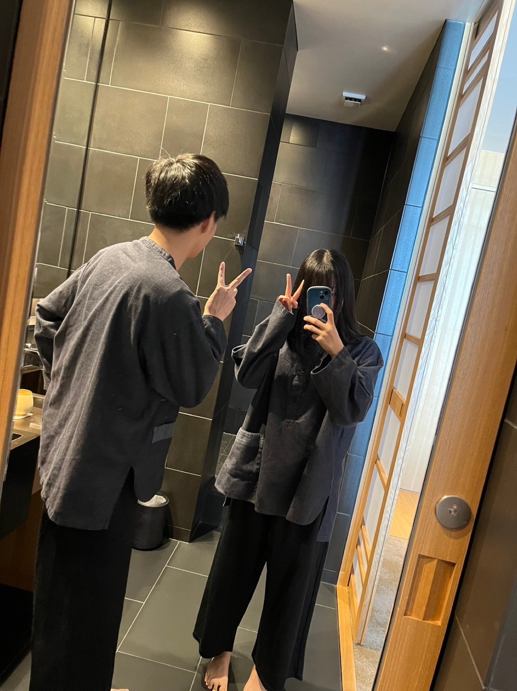

2023.02.25Disney
Disney
学生最後のディズニー。初めて一緒に行ったディズニーの写真の比較！
こう見ると、もっと寄せれたかな？笑
2018年と2023年の比較


2023.03.21Arima
有馬温泉
生せんべい食べれなかったから、またリベンジ行かなきゃだよ！
この無邪気な笑顔の彩乃、可愛い。大好き。
...げんは花粉症なのかなんなのか目が死んでる。


2023.03.22Kobe
神戸
有馬温泉からの甲子園！
電車の中でWBCの決勝見て盛り上がったね笑
高校野球だけど、彩乃初めての甲子園球場！
有馬の前に行ったけど、アンパンマンミュージアム！似てる！可愛い！


2023.09.23Yokohama
横浜
赤レンガ倉庫、想像以上の満足度でいっぱい行ったね。笑
中華街でいっぱい食べ歩きするぞ！って望んだのに、初手めっちゃ大きい唐揚げ食べて全然食べれなかった。。笑
横浜お気に入りの場所だからまた行くと思うけど（主に野球）、色々なもの食べようね！！笑



2023.11.12Atami
6th anniversary
５周年に続けてまたまた静岡。行ってみたいホテルに着いてきてくれてありがとう。
そして当日は思いっきり体調崩してごめんなさいでした。
色々なホテル行ってきたけど、過去最高値です。非日常的な体験ができたし、おしゃれなコースディナーも体験出来て、
あやのにとっても良い経験になってたら嬉しいです。
もっと体調が良ければもっと楽しめたかな。と少し後悔中。。。またチャンスがあれば行きたい。。

おまけPictures
おまけの写真
神宮球場の彩乃。この写真お気に入り。
金山のチームラボの彩乃